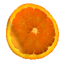
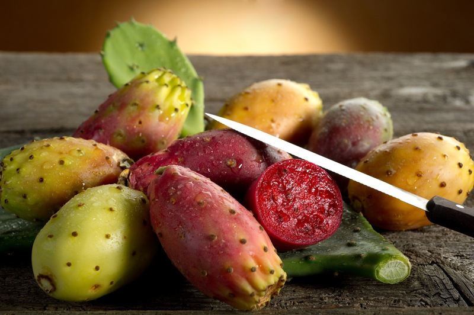
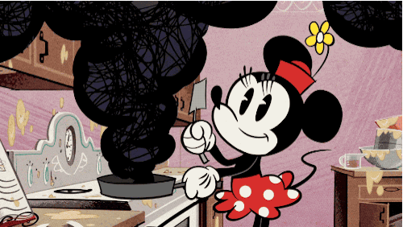

| L'INIZIATIVA: Il progetto dal titolo "Typical Taste… trionfo di gusti alle pendici dell’Etna: mangiali, gustali, consigliali" ha come obiettivo primario la promozione e la divulgazione, anche tramite iniziative locali e spot (tv, radio e web), delle caratteristiche nutrizionali ed organolettiche delle eccellenze agroalimentari delle pendici dell'Etna e dell'entroterra siciliano, in particolare delle arance rosse di Sicilia Igp, del ficodindia, della ciliegia dell’Etna Dop e dei loro derivati e trasformati.  La realizzazione di tali iniziative e spot intende inoltre raccontare e valorizzare le tradizioni storico-culturali del territorio etneo a cui i prodotti sono strettamente e inscindibilmente correlati.  Oltre alla trasmissione dei messaggi in materia di corretta alimentazione, la promozione comprende iniziative collaterali, come la partecipazione a work shop alimentari e agricoli, giornate interamente dedicate ai più piccoli con laboratori di gusto e show coking realizzati dagli studenti dell’Alberghiero di Centuripe, oltre ad interessanti app e kit didattici informativi per le scuole di ogni ordine e grado creati appositamente dagli studenti del Liceo delle Scienze Umane di Agira e dell'Istituto Tecnico di Regalbuto.  L’iniziativa di comunicazione è promossa dagli studenti e dai docenti dell’Istituto di Istruzione Superiore "Fortunato Fedele", dal Consorzio di tutela del ficodindia dell’Etna DOP e dal Consorzio Euroagrumi, con la partecipazione dell’Istituto Comprensivo "F. Ansaldi" di Centuripe e dell’Istituto Comprensivo "G.F. Ingrassia" di Regalbuto, ed è portata avanti grazie al finanziamento ricevuto dal M.I.U.R. in occasione del bando: "Made in Italy – un modello educativo". |
|
VAI
AL
QUESTIONARIO |
|
VAI
AL
CANALE YOUTUBE |
| TORNA
ALLA HOME |